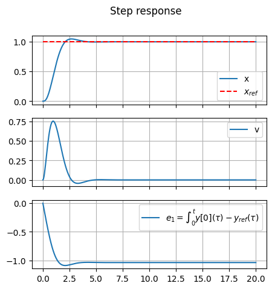
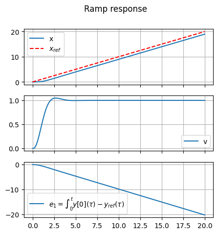
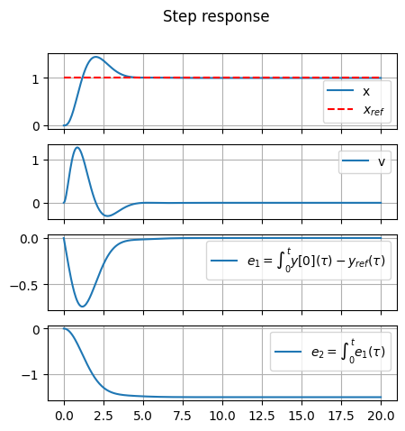
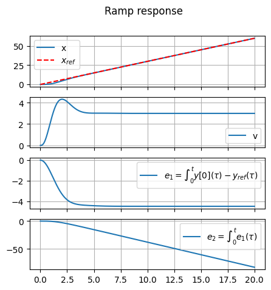

38.7.3. Example of optimal control for tracking reference input#
Show code cell source
#!pip install control
38.7.3.1. Mass-damper-spring system#
i.e. the control \(u\) is a force per unit-mass, as the second component of the state equation is nothing but the second principle of Newton’s mechanics,
The first equation is the kinematic relation between position and velocity. The measurement output is the position \(x\).
Infinite time horizon optimal problem is solved with the \(\texttt{control.lqr}\) routine, see https://python-control.readthedocs.io/en/latest/generated/control.lqr.html. The continuous-time LTI system is defined as a state space system with the function \(\texttt{control.ss}\), see https://python-control.readthedocs.io/en/latest/generated/control.ss.html.
38.7.3.2. Augmented system for reference signal#
38.7.3.2.1. Single integral for step tracking#
Let \(x_{ref}\) a reference signal. An augmented system can be defined in order to used optimal control. Let
the state-space representation of the plant. Let \(\mathbf{y}_{ref}\) a desired output and the integral error
as a new state with dynamical equation
The optimal control is applied to the augmented system
Optimal control framework provides the opitmal gain matrix \(\hat{\mathbf{K}}\), so that \(\mathbf{u} = - \hat{\mathbf{K}} \mathbf{z}\) and the closed loop system becomes
38.7.3.2.1.1. Optimal control design#
Show code cell source
import numpy as np
import control as ct
import matplotlib.pyplot as plt
import copy
#> System: Simple Mass-Spring-Damper
A = np.array([[0, 1], [-2, -0.5]])
B = np.array([[0], [1]])
C = np.array([[1, 0], [0, 1]]) # For full-state feedback, the output need to be y=x
D = np.array([[0], [0]])
sys = ct.ss(A, B, C, D)
sys_labels = {
"state" : ["x", "v"],
"output": ["x", "v"],
"input" : ["f"]
}
Show code cell source
#> Augmented system for reference input
# dx = A x + B u
# dz = e = y[0] - yref = C[0,:] x + D[0,:] u - yref
# y = x
# d [ x ] = [ A . ][ x ] + [ B ] u + [ . ] yref
# [ z ] [ C[0:] . ][ z ] [ D[0:] ] [-I ]
Aa = np.block([
[ A, np.zeros((2, 1))],
[C[0,:], np.zeros((1, 1))]
])
Ba = np.block([
[B],
[D[0,:]]
])
Ca = np.block([
[C, np.zeros((2,1))]
])
Da = np.array([[0], [0]])
sys_aug = ct.ss(Aa, Ba, Ca, Da)
sys_aug_labels = copy.deepcopy(sys_labels)
sys_aug_labels["state"].append(r"$e_1 = \int_{0}^{t} y[0](\tau) - y_{ref}(\tau)$")
# LQR Weights
Q = np.diag([0., 10., 100.])
R = [[1]]
#> Calculate optimal gain
# ct.lqr() solve the infinite-horizon optimal control, using Riccati equation
# with K: state-feedback gain matrix
# S: solution to ARE
# E: closed-loop system eigenvalues
Ka, Sa, Ea = ct.lqr(sys_aug, Q, R)
# print("\nGain matrix\n")
# print("Ka: \n", Ka)
# print("Aa: \n", Aa)
# print("Ba: \n", Ba)
# Simulate closed-loop response with reference input
A_cl = Aa - Ba @ Ka
B_ref = np.array([[0], [0], [-1]])
C_cl = np.eye(3)
D_cl = np.zeros((3, 1))
sys_cl = ct.ss(A_cl, B_ref, C_cl, D_cl)
# print("\nClosed loop system\n")
# print(sys_cl)
38.7.3.2.1.2. Response#
Show code cell source
# This .ipynb is using an old version of control library. In latest versions of this library,
# input of response_*() functions may also be
# - timepts (instead of T) to define final time or vector of time steps, where the input is defined
# - inputs (instead of U) to define the input at time steps defined in timepts
n_states = np.shape(A_cl)[0]
"""
#> Impulse response
t, y = ct.impulse_response(sys_cl, T=20.)
fig, ax = plt.subplots(3,1, figsize=(5,5))
for i in range(3):
ax[i].plot(t, y[i,0,:], label=sys_aug_labels["state"][i])
ax[i].grid(True)
if i < n_states-1: ax[i].set_xticklabels([])
ax[i].legend()
fig.suptitle("Impulse response")
plt.show()
"""
#> Step response
t, y = ct.step_response(sys_cl, T=20.)
fig, ax = plt.subplots(3,1, figsize=(5,5))
for i in range(3):
ax[i].plot(t, y[i,0,:], label=sys_aug_labels["state"][i])
if ( i == 0 ):
ax[i].plot(t, np.ones(len(t)), '--', color='red', label=r"$x_{ref}$")
ax[i].grid(True)
if i < n_states-1: ax[i].set_xticklabels([])
ax[i].legend()
fig.suptitle("Step response")
plt.show()
#> Ramp response
tfin = 20
time_v = np.linspace(0, tfin, 100*tfin+1)
ramp_v = np.array([time_v.copy()])
t, y = ct.forced_response(sys_cl, T=time_v, U=ramp_v)
# print(np.shape(y))
fig, ax = plt.subplots(3,1, figsize=(5,5))
for i in range(3):
ax[i].plot(t, y[i,:], label=sys_aug_labels["state"][i])
if ( i == 0 ):
ax[i].plot(time_v, ramp_v[0,:], '--', color='red', label=r"$x_{ref}$")
ax[i].grid(True)
if i < n_states-1: ax[i].set_xticklabels([])
ax[i].legend()
fig.suptitle("Ramp response")
plt.show()


38.7.3.2.2. Double integral for ramp tracking#
As the error never reaches a zero value in the ramp response of the augmented system with one integral, another integral is added to the system.
Let
the state-space representation of the plant. Let \(\mathbf{y}_{ref}\) a desired output and the integral error
as a new state with dynamical equation
The second augmenting state is defined as
so that the dynamical equation is
The optimal control is applied to the augmented system
Optimal control framework provides the opitmal gain matrix \(\hat{\mathbf{K}}\), so that \(\mathbf{u} = - \hat{\mathbf{K}} \mathbf{z}\).
38.7.3.2.2.1. Optimal control design#
Show code cell source
#> Augmented system for reference input
# ...
Aaa = np.block([
[ A, np.zeros((2, 2))],
[C[0,:], np.zeros((1, 2))],
[np.zeros((1,2)), np.ones((1,1)), np.zeros((1,1)) ]
])
Baa = np.block([
[B],
[D[0,:]],
[0]
])
Caa = np.block([
[C, np.zeros((2,2))]
])
Daa = np.array([[0], [0]])
sys_aug = ct.ss(Aaa, Baa, Caa, Daa)
sys_aug_labels = copy.deepcopy(sys_labels)
sys_aug_labels["state"].append(r"$e_1 = \int_{0}^{t} y[0](\tau) - y_{ref}(\tau)$")
sys_aug_labels["state"].append(r"$e_2 = \int_{0}^{t} e_1(\tau)$")
# LQR Weights
Q = np.diag([0., 10., 100., 100.])
R = [[1]]
#> Calculate optimal gain
# ct.lqr() solve the infinite-horizon optimal control, using Riccati equation
# with K: state-feedback gain matrix
# S: solution to ARE
# E: closed-loop system eigenvalues
Kaa, Saa, Eaa = ct.lqr(sys_aug, Q, R)
# print("\nGain matrix\n")
# print("Ka: \n", Ka)
# print("Aa: \n", Aa)
# print("Ba: \n", Ba)
# Simulate closed-loop response with reference input
A_cl = Aaa - Baa @ Kaa
B_ref = np.array([[0], [0], [-1], [0]])
C_cl = np.eye(4)
D_cl = np.zeros((4, 1))
sys_cl = ct.ss(A_cl, B_ref, C_cl, D_cl)
# print("\nClosed loop system\n")
# print(sys_cl)
Show code cell source
# print(sys_labels)
# print(sys_aug_labels)
38.7.3.2.2.2. Response#
Show code cell source
n_states = np.shape(A_cl)[0]
"""
#> Impulse response
t, y = ct.impulse_response(sys_cl, T=20.)
fig, ax = plt.subplots(n_states,1, figsize=(5,5))
for i in range(n_states):
ax[i].plot(t, y[i,0,:], label=sys_aug_labels["state"][i])
ax[i].grid(True)
if i < n_states-1: ax[i].set_xticklabels([])
ax[i].legend()
fig.suptitle("Impulse response")
plt.show()
"""
#> Step response
t, y = ct.step_response(sys_cl, T=20.)
fig, ax = plt.subplots(n_states,1, figsize=(5,5))
for i in range(n_states):
ax[i].plot(t, y[i,0,:], label=sys_aug_labels["state"][i])
if ( i == 0 ):
ax[i].plot(t, np.ones(len(t)), '--', color='red', label=r"$x_{ref}$")
ax[i].grid(True)
if i < n_states-1: ax[i].set_xticklabels([])
ax[i].legend()
fig.suptitle("Step response")
plt.show()
#> Ramp response
ramp_slope = 3.
tfin = 20
time_v = np.linspace(0, tfin, 100*tfin+1)
ramp_v = ramp_slope * np.array([time_v.copy()])
t, y = ct.forced_response(sys_cl, T=time_v, U=ramp_v)
# print(np.shape(y))
fig, ax = plt.subplots(n_states,1, figsize=(5,5))
for i in range(n_states):
ax[i].plot(t, y[i,:], label=sys_aug_labels["state"][i])
if ( i == 0 ):
ax[i].plot(time_v, ramp_v[0,:], '--', color='red', label=r"$x_{ref}$")
ax[i].grid(True)
if i < n_states-1: ax[i].set_xticklabels([])
ax[i].legend()
fig.suptitle("Ramp response")
plt.show()


Show code cell source
#> Steady state as a consequence of steady input
# (A-Bu K)*z + Bref * yref = 0
yref = np.array([[1.]])
z = np.linalg.solve(A_cl, -B_ref @ yref)
# print(Aaa)
# print(Baa)
# print(Kaa)
# print(Baa @ Kaa)
print("A_cl\n", A_cl)
print("B_ref\n", B_ref)
#> Steady state response
print(f"Steady-state response:\n{z}")
Show code cell output
A_cl
[[ 0. 1. 0. 0. ]
[-14.99029725 -6.01918553 -19.99514804 -10. ]
[ 1. 0. 0. 0. ]
[ 0. 0. 1. 0. ]]
B_ref
[[ 0]
[ 0]
[-1]
[ 0]]
Steady-state response:
[[ 1. ]
[ 0. ]
[-0. ]
[-1.49902973]]